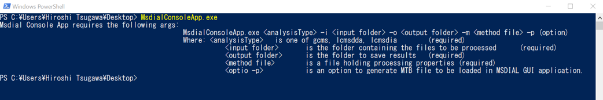
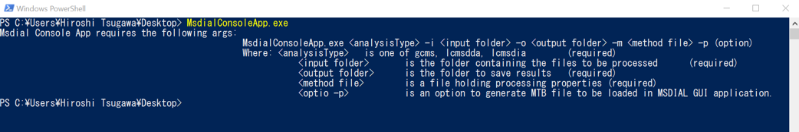
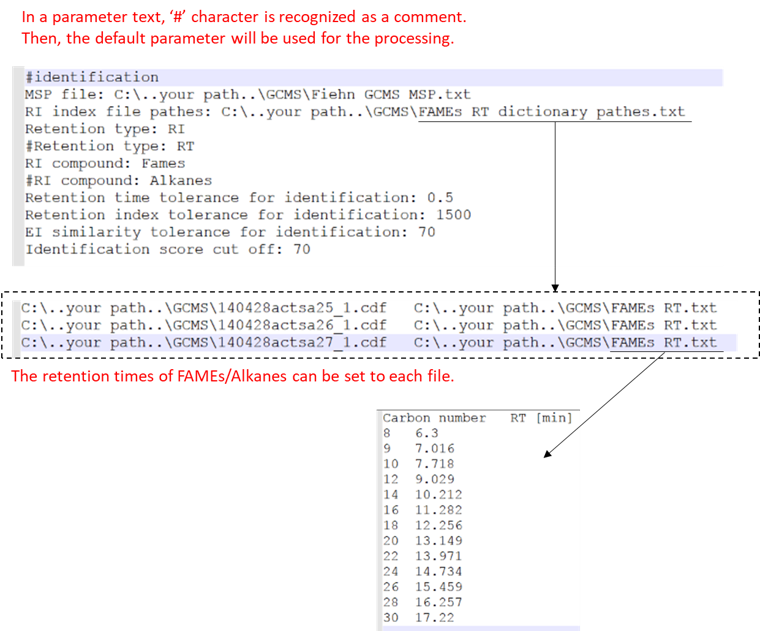

MS-DIAL
Console application
Program download
The console application is stored in the same folder of MSDIAL GUI. MS-DIAL program.
See the main page too.
See the main page too.
Tutorial
This is a quick tutorial of MSDIAL console application. The main processer is stored in the same folder of MS-DIAL GUI program.
Just type MsdialConsoleApp.exe to show the help.


Note 1
All of the results like feature detection, deconvolution, and alignment was stored in "*.msdial" ASCII format file. You can open it in Excel by drag-and-drop of the file.Note 2
If you want to keep MTD format file to be used in MS-DIAL GUI, type "-p" as an option like: > MsdialConsoleApp.exe lcmsdda -i .\LCMS_DDA\ -o .\LCMS_DDA\ -m .\LCMS_DDA\Msdial-lcms-dda-Param.txt -p
1.GC-MS process
The program accepts netCDF, mzML, or ABF files.
The demonstration is just for a basic processing (just peak detection and alignment).
The result is written as the extension of "***.msdial" in the output directory.
The demonstration is just for a basic processing (just peak detection and alignment).
The result is written as the extension of "***.msdial" in the output directory.
Note 1
If you want to calculate retention indexes, see FAMEs RT dictionary pathes.txt and FAMEs RT.txt in GCMS folder.The parameter setting for RI calcuation is also written in Msdial-GCMS-Param.txt.
Note 2
If you want to identify the targeted metabolites, this program accepts MSP format file. The required field is also written in the parameter file.
Example
> MsdialConsoleApp.exe gcms -i .\GCMS\ -o .\GCMS\ -m .\GCMS\Msdial-GCMS-Param.txt*below is a quick explanation of how to set MSP file and RI index files.
The MSP setting is also the same in LCMS projects.

2. LC-MS or LC-MS/MS (data dependent acquisition)
The program accepts netCDF, mzML, and ABF files.
The result is written as the extension of "***.msdial" in the output directory.
Please type lcmsdda unless you process data independent acquisition data like SWATH.
The result is written as the extension of "***.msdial" in the output directory.
Please type lcmsdda unless you process data independent acquisition data like SWATH.
Note 1
If you want to identify the targeted metabolites, this program accepts MSP format file. The required field is also written in the parameter file.
Example
> MsdialConsoleApp.exe lcmsdda -i .\LCMS_DDA\ -o .\LCMS_DDA\ -m .\LCMS_DDA\Msdial-lcms-dda-Param.txt
3. LC-MS/MS (data independent acquisition)
The program accepts ABF format file only.
The DIA file path must be required. See the Msdial-lcms-dia-Param.txt and Plasma-HILIC-SWATH-Experiment.txt to check the detail. Also, see the main tutorial for futher detail.
The result is written as the extension of "***.msdial" in the output directory.
Please type lcmsdia for the processing.
The DIA file path must be required. See the Msdial-lcms-dia-Param.txt and Plasma-HILIC-SWATH-Experiment.txt to check the detail. Also, see the main tutorial for futher detail.
The result is written as the extension of "***.msdial" in the output directory.
Please type lcmsdia for the processing.
Note 1
If you want to identify the targeted metabolites, this program accepts MSP format file. The required field is also written in the parameter file.
Example
> MsdialConsoleApp.exe lcmsdia -i .\LCMS_DIA\ -o .\LCMS_DIA\ -m .\LCMS_DIA\Msdial-lcms-dia-Param.txt